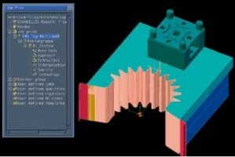
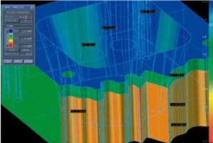
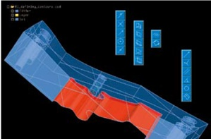
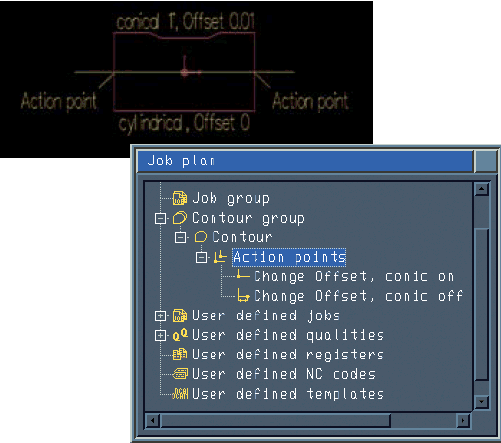
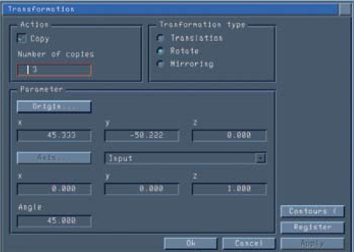
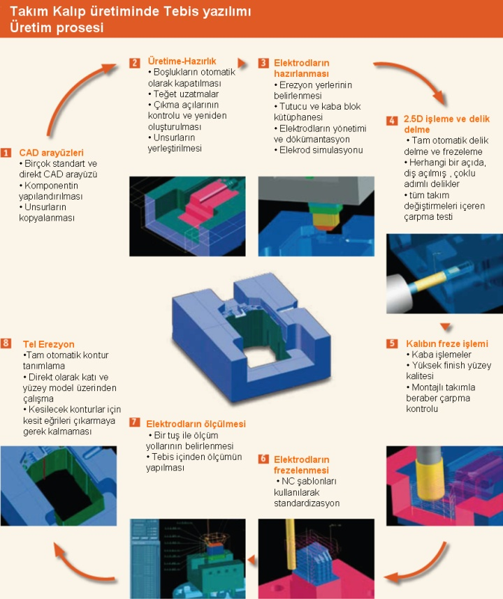

|
Entegre CAD/CAM sistemi
Tebis yazýlýmýnýn entegre çözümler sunmasý, tasarým ve üretim proseslerini kolaylaþtýrýr. Üretim sürecinde yer alan adýmlarýn hepsini tek bir sistemde gerçekleþtirebileceðiniz için veri transferi sonrasý geometrik düzeltmeler ve ilave hazýrlýklar gibi zaman alýcý iþlemleri yapmak zorunda kalmazsýnýz. Program içinde bulunan tasarým ve analiz opsiyonlarý ise büyük avantaj saðlar.
|  |
Kalýp ve üretim sektöründeki Tebis kullanýcýlarý, programýn talaþlý imalat, tasarým, elektrot hazýrlama v.b birçok yeteneklerinin yaný sýra ayný sistem içinde tel erozyon iþlemlerini de gerçekleþtirebilirler. |
|  |
Tebis analiz fonksiyonu ile; yüzeylerin eðriselliðini, kalitesini kontrol edebilir, koordinatlarý, radyüsleri, boy ve açýlarý, iki eleman arasýndaki mesafeleri belirleyebilirsiniz. Ayrýca CAD model üzerine notlar ekleyebilirsiniz. |
|  |
Tüm Tebis CAM uygulamalarýnda olduðu gibi, noktalar, yaylar,çizgiler, daireler, eðriler ve düzlemler gibi basit geometrileri oluþturabilirsiniz. Daire merkezlerini, çizgi veya eðrilerin uç, orta noktalarýný, kesiþim noktalarýný seçebilirsiniz. |
Bir kontur içindeyken fonksiyon deðiþtirme
Konturlar üzerinde istediðiniz bir alanda konik açýlarý ve ofsetler için kesim parametrelerini deðiþtirebilirsiniz;

Kesimleri taþýma, kopyalama ve aynalama
Tüm teknolojik kesim parametreleri ile birlikte taþýma, kopyalama ve aynalama iþlemlerini yapabilirsiniz;

Otomatik dokümantasyon
Sistem yapýlan kesimlerle ilgili gerekli tüm bilgileri içeren raporlar sunar. Ayrýca, tel geçme için delinecek deliklerin koordinatlarýný içeren bir NC dosyasý da oluþturur.

Ýrtibat:
 Redoks Mühendislik Bilgisayar Tic. Ltd. Þti. Redoks Mühendislik Bilgisayar Tic. Ltd. Þti.
Buttim Ýþ Merkezi C Blok Kat:4 No:1184,
Bursa
Tel: (224) 211 62 00
Kýsýklý Mah. Alemdað Cad. Yanyol Sok. Dumankaya Sitesi B Blok No:27/4
Üsküdar, Ýstanbul
Tel: (216) 521 53 85
www.redoks.com.tr
|